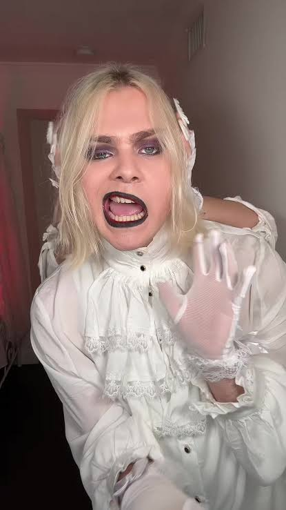

Conoce el estilo musical de Kim Dracula.
Kim Dracula es un artista conocido por su estilo musical experimental, que combina elementos del metal, rock y música electrónica.
Su propuesta destaca por sus cambios de sonido, interpretaciones intensas y una estética oscura.

Conoce información, novedades y contenido oficial relacionado con el artista.
Explora sus canciones, álbumes y lanzamientos musicales.
Encuentra videos musicales y contenido audiovisual del artista.
Kim Dracula es un artista australiano conocido por combinar diferentes géneros musicales, como metal, industrial, trap, jazz y música electrónica. Su estilo experimental mezcla sonidos muy distintos para crear canciones intensas e impredecibles.
Un dato interesante es que su versión de "Paparazzi", originalmente interpretada por Lady Gaga, se hizo viral en TikTok y ayudó a que muchas personas descubrieran su música y su estilo fuera de lo convencional.
Elegí a Kim Dracula porque me gusta su música y su manera de combinar diferentes estilos musicales ya que en un momento puede sonar jazz y al otro un gutural intenso.
Lo que más me gusta es la intensidad de sus canciones, la mezcla de sonidos y la libertad con la que experimenta con distintos géneros.
Al investigar aprendí que Kim Dracula combina géneros como el metal, la música electrónica y otros estilos experimentales. También descubrí que detrás de su música hay una propuesta artística que busca romper con lo convencional.